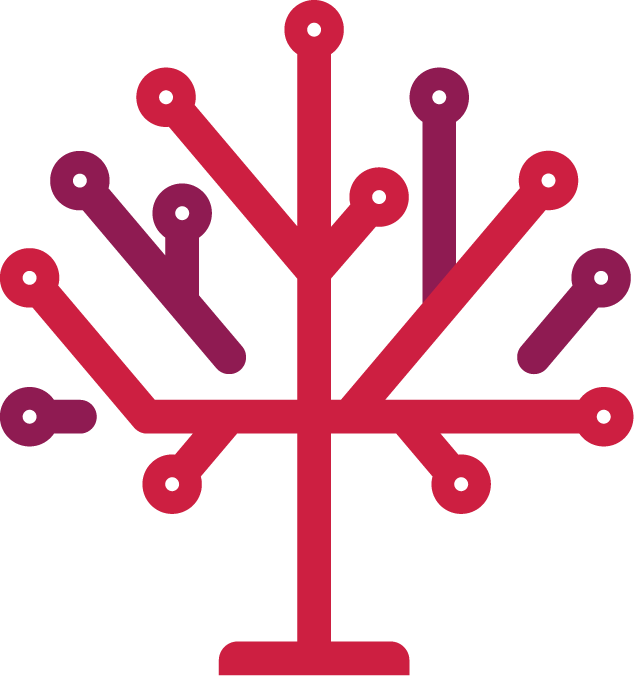

Measures without a complete count, and when to expect more. Every count here is unofficial until the county certifies it.
Every measure is mapped to the same two sides so results add up across differently worded questions: Restrict (the anti-data-center outcome) and Allow (the pro-data-center outcome).
Each dot is one measure, placed by how its vote splits: left of center, Restrict is winning; right of center, Allow is. Group by What YES does to see whether voters are choosing to restrict data centers or just voting no, or by Ballot text to compare ballots that name data centers with those that don't. Diamonds in the bottom lane are the measures decided earlier in 2026, shown for comparison and not in the Nov 3 counts.
Highest Restrict share first, then the measures with no votes yet, and the measures decided earlier in 2026 last; sort By status to group them by where the count stands. Bars always put Restrict on the left in blue and Allow on the right in orange; YES and NO mark which side each ballot answer supports. The center tick is 50 percent.
One dot per measure. Hover for the latest count; click to open the race.
Every change in a count the tracker has recorded, newest first, and when the polls closed.
A measure is included when the question itself is about data centers: bans and megawatt caps, zoning referendums on data center sites, agreements with data center developers, voter-approval requirements written to stop a data center, and advisory questions asking whether to allow them.
Compiled from Ballotpedia's 2026 data center measure tracking, MultiState's September 2026 roundup, county election offices, and local reporting as of mid-October 2026. Ballot language is quoted where an official text was available and marked as a paraphrase otherwise.
Every race links to the election office page the numbers come from. The tracker reads county results pages every few minutes on election night and hourly through Nov 13; towns and counties that post scans or PDFs are entered by hand. A count here can trail the county's own page, so check the source for the latest. Maine's Secretary of State does not report local questions, so its towns' counts come from each town.
Built by Redbud Consulting, a polling, qualitative research and data strategy firm. Questions or corrections: info@redbud.consulting.